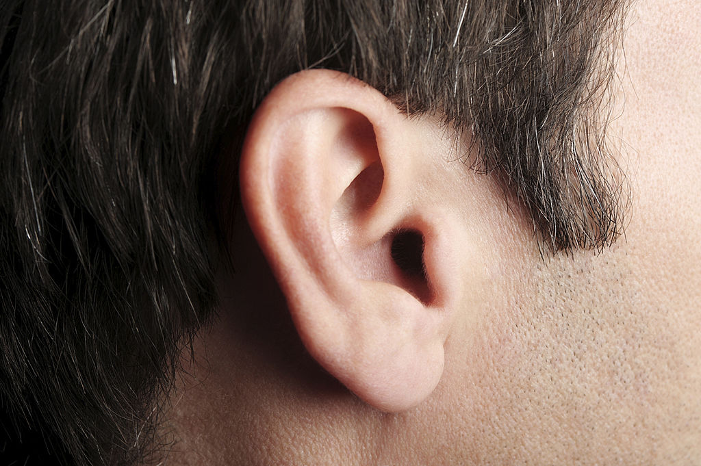

Why Do My Ears Ring Randomly?
A sudden ringing, buzzing, or humming sound in your ears can be confusing and even worrying. Many people ask the same question online: why do my ears ring randomly? This sensation is very common and, in most cases, harmless. Understanding the causes can help you know when it’s normal and when to seek medical advice.
What Is Ringing in the Ears?
Ringing in the ears is often referred to as tinnitus. It is the perception of sound when no external noise is present. The sound may come and go and can vary from a faint buzz to a high-pitched ringing. Millions of people in the United States experience tinnitus at some point in their lives.
Common Causes of Random Ear Ringing
One of the most common causes of ear ringing is exposure to loud noise. Listening to loud music, attending concerts, or using headphones at high volume can irritate the inner ear. Even short exposure can temporarily trigger ringing.
Stress and Anxiety
Stress and anxiety can increase sensitivity in the nervous system. When stress levels rise, blood flow and nerve activity around the ears may change, leading to temporary ringing or buzzing sounds. Many people notice ear ringing during stressful periods of life.
Earwax Buildup
Excess earwax can block the ear canal and affect how sound travels. This blockage may cause ringing, muffled hearing, or pressure in the ear. Cleaning ears safely or visiting a healthcare professional can often resolve this issue.
Changes in Blood Pressure
Sudden changes in blood pressure can also cause ear ringing. This is sometimes described as a pulsing or rhythmic sound. Dehydration, standing up too quickly, or certain medications can influence blood pressure and trigger these sensations.
Medications and Side Effects
Some medications list tinnitus as a side effect. Common examples include certain antibiotics, pain relievers, and antidepressants. If ear ringing starts after beginning a new medication, it’s best to consult a doctor.
When Should You Be Concerned?
In most cases, occasional ear ringing is not dangerous. However, you should seek medical attention if the ringing:
- Lasts for several weeks
- Occurs in only one ear
- Is accompanied by hearing loss or dizziness
- Becomes louder or more frequent over time
How to Reduce Ear Ringing
Reducing exposure to loud noises, managing stress, staying hydrated, and limiting caffeine can help reduce ear ringing. Using white noise at night may also help make the sound less noticeable.
ALSO READ: Why Do My Eyes Twitch Randomly? Causes, Meaning, and When to Worry